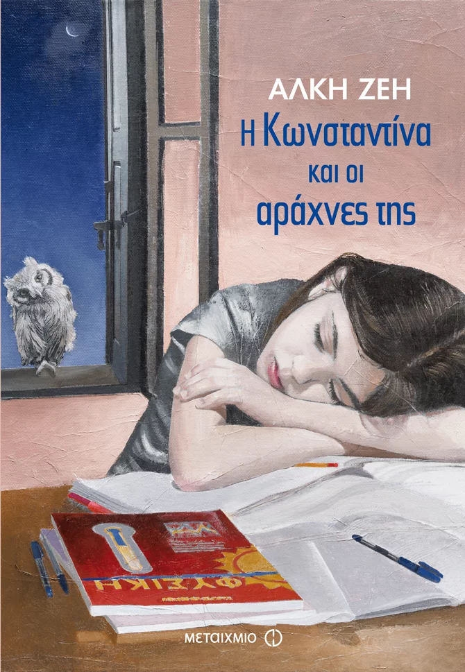
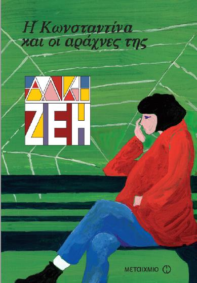

"Μα δεν πήρες είδηση τίποτα;" "Όχι, Φάρμουρ, τίποτα." Η Κωνσταντίνα, όταν μετακόμισε με τους γονείς της στη Γερμανία, ήταν τόσο ευτυχισμένη με την καινούρια της ζωή, που ποτέ δεν της πέρασε από τον νου πως μια μέρα θα άλλαζαν όλα. Καταπληκτικό σχολείο, νέοι φίλοι, βόλτες και ζεστή σοκολάτα τα απογεύματα με τον μπαμπά, παγοδρόμιο. Ώσπου μια μέρα της το ανακοίνωσαν: οι γονείς της χωρίζουν τελεσίδικα και είναι καλό γι' αυτήν να επιστρέψει στην Ελλάδα στη γιαγιά της, τη Φάρμουρ. Όχι, δεν είναι αυτό το πραγματικό όνομα της κυρίας Ισμήνης: Φάρμουρ, τη φωνάζει η Κωνσταντίνα στα σουηδικά. Μα πώς γκρεμίστηκαν όλα; Χωρίς δικό της μεγάλο χώρο, χωρίς πουπουλένιο πάπλωμα, χωρίς δικό της γραφείο, χωρίς κλειδιά δεν μπορεί να αντέξει άλλο την γκρίνια της γιαγιάς της και έχει βαρεθεί να ακούει ξανά και ξανά τις ιστορίες που της διηγείται μαζί με τις τρεις αχώριστες φίλες της για την Κατοχή και την Αντίσταση. Εκείνη ποιος θα την καταλάβει; Ας είναι καλά ο Λουμίνης, ένα μεγαλύτερο αγόρι από το νέο της σχολείο, και το θαυματουργό γαλάζιο χαπάκι που την κάνει να τα ξεχνάει όλα και να μην τη νοιάζει τίποτα: ούτε ο χωρισμός των γονιών της και οι καινούριες τους οικογένειες ούτε η δύσκολη συμβίωση με τη γιαγιά της. Και μετά όμως τι; Ακόμα ένα χαπάκι κι άλλο ένα κι άλλο ένα... και η Κωνσταντίνα μια στα ουράνια και μια στον γκρεμό, στο δικό της σύμπαν όπου κυριαρχεί το ψέμα, παγιδευμένη στις αράχνες της να παλεύει με χέρια και με πόδια να ξεμπλεχτεί και να μην μπορεί. Ή μήπως μπορεί;
|  |  |
Βρείτε περισσότερες πληροφορίες σχετικά με το βιβλίο: Η Κωνσταντίνα Και Οι Αράχνες Της.